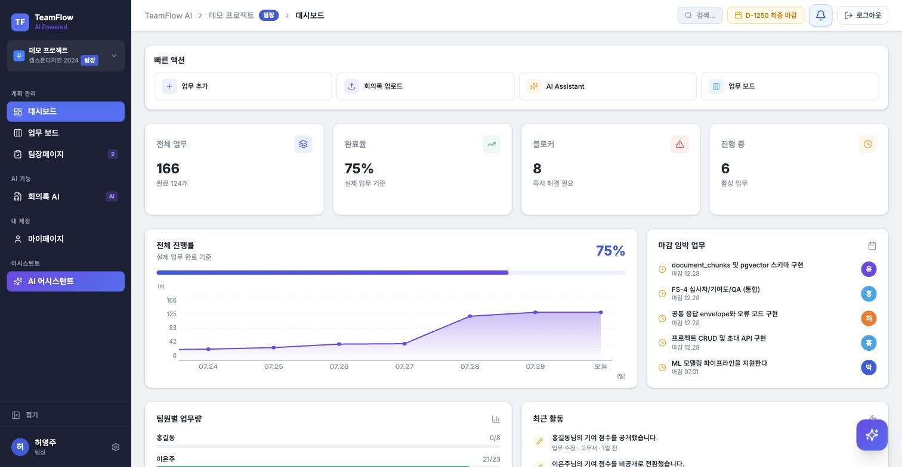
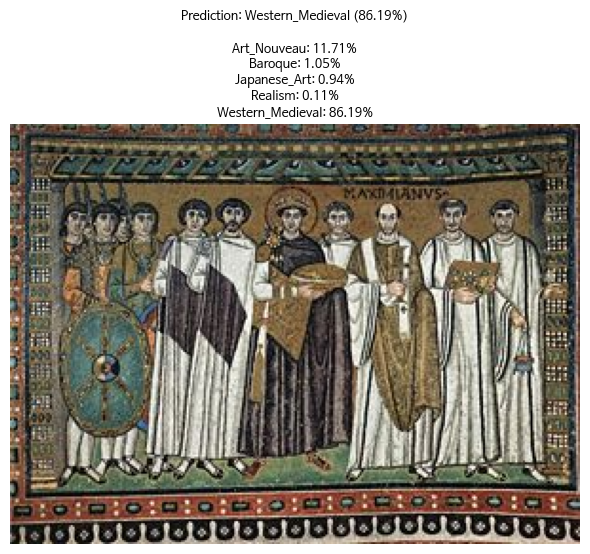
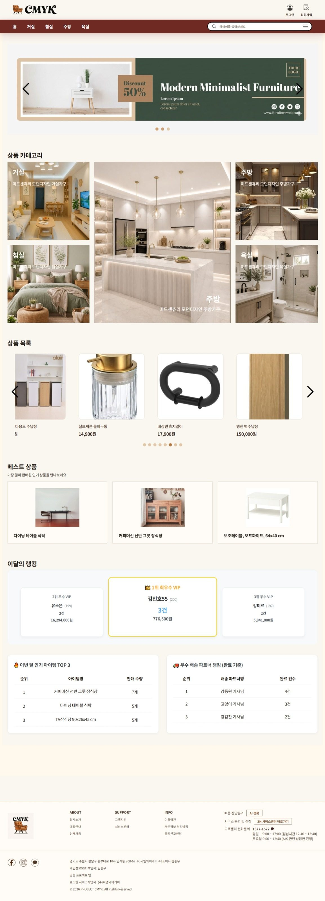
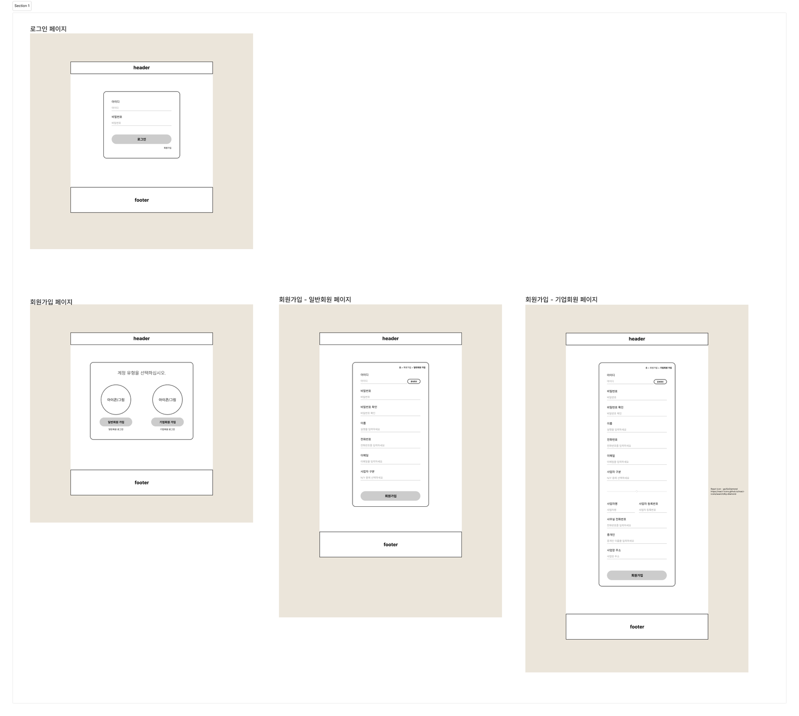
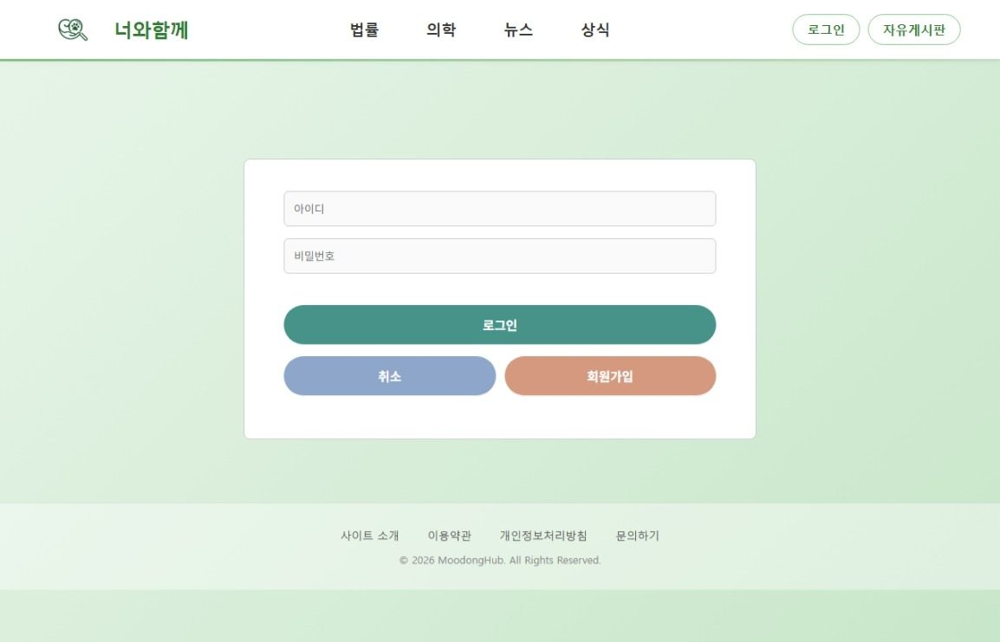

유소은 Portfolio
- 1
React · Spring Boot · FastAPI를 한 기능 안에서 직접 잇는 AI 서비스 풀스택 개발자입니다.
- 2
팀 프로젝트 WorkFlow AI에서 대시보드 오너를 맡아 화면 9개 · REST API 10개 · ML 모델 2종을 단독으로 구현했고, ML 서버가 죽어도 화면이 유지되도록 실패 정책을 설계했습니다.
- 3
ML · DL · LLM 개인 프로젝트 3건에서 회화 사조 분류 정확도 94.5%, 작품 벡터 42,500건 검색 파이프라인을 만들었습니다.
K-Digital Convergence 기초반에서 Java 웹 팀 프로젝트 3건(JSP → React+Express → Spring Boot)을, AI 심화반에서 ML·DL·LLM 개인 프로젝트 3건과 팀 프로젝트 1건을 진행했습니다.

핵심 역량
7개 프로젝트에서 공통적으로 맡은 역할입니다. 각 항목은 아래 프로젝트에서 실제 구현과 수치로 확인하실 수 있습니다.
한 기능을 전 계층에서 완결
WorkFlow AI에서 7인 기능 오너제의 대시보드 오너를 맡아, React 화면 9개와 Spring Boot API 10개, PostgreSQL 4개 테이블 집계, FastAPI ML 서버 2개를 설계부터 연동까지 직접 처리했습니다.
학습한 모델을 서비스에 서빙
모델을 학습으로 끝내지 않고 FastAPI로 서빙했습니다. 예측 이력 테이블, 호출 타임아웃, 장애 시 폴백 정책을 모델의 저장 방식에 맞춰 다르게 설계해, ML 서버가 내려가도 대시보드는 계속 동작합니다.
문제를 측정해서 해결
반복 조회로 늘어나던 DB 왕복을 한 번의 쿼리로 줄였고, 소규모 팀에서 Isolation Forest가 과부하 팀원을 놓치는 것을 확인해 MAD 기반으로 교체했습니다. 모델 성능은 K-fold로 다시 검증해 테스트 정확도와 일반화 성능을 함께 기록했습니다.
팀이 함께 쓸 구조를 만듭니다
7명이 같은 구조 위에서 작업하도록 프로젝트 폴더 구조 표준안을 제안해 확정했고, 착수보고서의 개발 수행 계획(역할 분담·일정·협업 방식)을 집필했습니다.
프로젝트 진행 순서
2026.02부터 2026.08까지 진행한 프로젝트 7건입니다. 사용자 인증·데이터 조회·화면 구성이라는 같은 문제를 매번 다른 스택으로 다시 구현하며 범위를 넓혔습니다.
세션 인증과 마이페이지 담당
JWT 인증과 회원 도메인 담당
메인 페이지와 OAuth2 인증 담당
R² 0.801
테스트 정확도 94.5%
작품 벡터 42,500건 구축
화면 9 · API 10 · ML 2종
기술 스택
각 기술로 무엇을 만들었는지와, 어떤 프로젝트에서 썼는지를 함께 적었습니다.
Frontend
- React대시보드 9화면 · 매물 탐색 · 가구몰 메인WorkFlow AI · PPAP · 3H
- TypeScript대시보드 응답 DTO 타입 정의WorkFlow AI
- Vite프론트엔드 개발 서버 · 빌드WorkFlow AI
- Tailwind CSS대시보드 카드·배지 반응형 레이아웃WorkFlow AI
- MUI · Bootstrap매물 입력 폼 · 가구몰 화면 컴포넌트PPAP · 3H
- Recharts · Chart.js진행률·업무량·실거래가 차트WorkFlow AI · PPAP
- JSP · JSTL회원 인증 · 마이페이지 화면너와 함께
Backend
- Java대시보드 집계 로직 · 회원 도메인WorkFlow AI · 3H
- Spring Boot대시보드 API 10개 · 상품 조회 APIWorkFlow AI · 3H
- Spring SecurityOAuth2 소셜 로그인 · 권한 분리3H Furniture
- Spring Data JPA업무·마일스톤·회원 테이블 접근3H · WorkFlow AI
- JWT토큰 인증 · 보호 라우트 검증PPAP · WorkFlow AI
- Node.js · Express매물·회원·상담 예약 REST APIPPAP
- Servlet · JDBC세션 로그인 · DTO/DAO 계층너와 함께
AI / ML
- PythonML 모델 학습 · FastAPI 서빙전 AI 프로젝트
- FastAPI지연 위험도·업무 편중 예측 서버WorkFlow AI
- TensorFlow · Keras회화 사조 분류 모델 학습artClassifier
- scikit-learn회귀 모델 비교 · MAD 이상치 탐지ML 개인 · WorkFlow AI
- MLflow전이학습 8개 trial 기록·비교artClassifier
- CLIP · ChromaDB작품 벡터 42,500건 유사도 검색Curatio
- Ollama · GemmaRAG 근거 기반 도슨트 해설 생성Curatio
- LangSmith업무 편중 계산 흐름 트레이싱WorkFlow AI
- Streamlit사조 예측·작품 추천 프로토타입artClassifier · Curatio
Database
- PostgreSQL · Supabase업무·활동·ML 예측 이력 저장WorkFlow AI
- Oracle DB상품·회원·게시판 테이블3H(Cloud ADB) · 너와 함께
- MongoDB · Mongoose매물·이미지·상담 예약 스키마PPAP
- pgvector문서 임베딩 저장 · 유사도 검색WorkFlow AI
협업 · 품질
- Git · GitHubfeature 브랜치 전략 · PR 리뷰전 프로젝트
- GitHub ActionsPR 자동 점검 · 팀 알림WorkFlow AI
- Vitest대시보드 훅·유틸 회귀 테스트WorkFlow AI
- JUnit · MockMvc집계 API · 권한 검증 테스트WorkFlow AI
- pytestML 예측 로직 테스트WorkFlow AI
- Jira · Discord · Slack이슈 추적 · PR 알림봇 연동WorkFlow AI
AI 심화반
ML · DL · LLM 개인 프로젝트 3건과, 이를 서비스 기능으로 구현한 팀 프로젝트 1건입니다.
WorkFlow AI
팀 프로젝트의 회의·업무·기록·평가를 AI가 하나의 흐름으로 잇는 협업 플랫폼

Curatio
회화 이미지를 벡터로 검색하고, LLM이 도슨트처럼 해설해 주는 미술 감상 서비스

artClassifier
회화 이미지를 5개 미술 사조로 분류하는 딥러닝 모델
온라인 게이머 사회적 고립도 예측
게이머의 행동·수면·정서 데이터로 사회적 고립 수준을 예측하는 회귀 모델
K-Digital Convergence 기초반 (Java)
팀 프로젝트 3건입니다. 서버 렌더링, 프론트/백엔드 분리, 프레임워크 기반 인증 순으로 구성이 바뀌었습니다.

3H Furniture
Spring Boot + React 기반 가구 이커머스 반응형 웹

PPAP
네이버 지도와 공공 실거래 데이터를 결합한 부동산 매물 탐색 플랫폼

너와 함께
반려견 보호자를 위한 정보 공유 커뮤니티 (JSP · Servlet MVC)
문제 해결 사례
개발 중 직접 발견하고 해결한 문제들입니다. 문제 · 분석 · 행동 · 결과 순으로, 어떤 선택지를 놓고 왜 그 방법을 골랐는지까지 적었습니다.
대시보드 로딩이 데이터 개수만큼 느려졌다
대시보드 요약 API가 업무·활동·팀원마다 UserRepository.findById를 반복 호출해, DB 왕복이 레코드 수만큼 늘어났습니다.
화면에 필요한 것은 담당자 이름 하나뿐이라 연관관계 매핑을 새로 추가할 이유가 없었습니다. 조회할 id를 먼저 모아 한 번에 가져오면 기존 도메인 구조를 건드리지 않고 왕복만 줄일 수 있다고 판단했습니다.
업무·활동·팀원에서 필요한 user id를 Set으로 모아 findAllById 한 번으로 조회하고, 같은 패턴을 조회 메서드 5곳에 공통 적용했습니다. 모든 읽기 메서드에 @Transactional(readOnly = true)를 붙였습니다.
업무·활동이 몇 건이든 사용자 조회는 1회로 고정됩니다.
Isolation Forest가 소규모 팀에서 극단값을 놓쳤다
업무 편중 이상치 탐지에서, 팀원 5~9명 규모일 때 명백히 과부하인 팀원을 이상치로 잡지 못하는 사례가 나왔습니다.
Isolation Forest는 표본이 적으면 트리 분할이 불안정해집니다. 팀 규모는 바꿀 수 없으니 알고리즘을 표본 수에 맞춰야 한다고 보고, 소표본에서 강건한 MAD 기반 Modified Z-score를 검토했습니다(임계값 3.5는 Iglewicz & Hoaglin 권장치).
팀원 수가 15명 미만이면 MAD 기반으로 자동 전환하도록 분기했습니다. MAD가 0이면 표준편차로 폴백하고, 표준편차마저 0인 피처는 변별력이 없어 판단에서 제외했습니다.
실제 팀 규모(5~9명)에서 놓치던 과부하 팀원이 정상적으로 탐지됩니다.
ML 서버가 죽었을 때 어떻게 할지가 모델마다 달랐다
ML 서버 두 대(지연 위험도·업무 편중)의 호출 실패를 똑같이 처리하면, 한쪽은 불필요하게 화면이 죽고 다른 쪽은 틀린 값을 보여주게 됩니다.
두 모델은 저장 방식이 다릅니다. 지연 위험도는 ml_predictions에 이력이 남아 되돌아갈 값이 있고, 업무 편중은 호출 시점마다 계산하는 라이브 값이라 캐시가 없습니다. 실패 정책도 저장 방식에 맞춰 갈라야 한다고 판단했습니다.
지연 위험도는 예외를 삼키고 마지막 저장 예측으로 응답하도록, 업무 편중은 503 WORKLOAD_SCORE_UNAVAILABLE로 명시하도록 나눴습니다. 연결 3초·읽기 30초 타임아웃도 함께 걸었습니다.
ML 서버가 내려가도 대시보드는 계속 뜨고, 값을 못 불러온 카드는 "0명"이 아니라 "…명"으로 실패를 드러냅니다.
완료일이 보는 사람마다 하루씩 달랐다
완료일과 경과일이 보는 사람의 브라우저 타임존에 따라 하루씩 다르게 표시됐습니다.
백엔드 JVM은 Asia/Seoul로 고정돼 있지만 LocalDateTime 문자열에는 오프셋이 없어, 브라우저가 로컬 타임존으로 해석하는 것이 원인이었습니다. 응답 포맷을 바꾸면 다른 오너의 API까지 영향을 주므로 프론트의 파싱 시점에서 보정하기로 했습니다.
오프셋이 없는 문자열에 +09:00을 명시해 파싱하고, "3일 이상 미업데이트" 같은 임계값 판정용(경과 시간 기준)과 사람이 읽는 라벨용(캘린더 경계 기준)을 별도 함수로 분리했습니다.
브라우저 타임존과 무관하게 모든 사용자에게 같은 날짜가 표시됩니다.
Spring에서 FastAPI로 보낸 요청이 깨졌다
Spring Boot에서 내부 ML 서버(FastAPI)로 보낸 요청이 응답을 받지 못하고 실패했습니다.
JDK HttpClient가 plaintext(http://) 대상에도 기본적으로 HTTP/2(h2c) 업그레이드를 시도하는데, uvicorn이 이를 지원하지 않는 것이 원인이었습니다. 서버를 교체하는 것보다 클라이언트에서 프로토콜을 고정하는 쪽이 영향 범위가 작다고 판단했습니다.
HttpClient에 HTTP_1_1을 명시하고, 무한 대기를 막기 위해 연결 3초·읽기 30초 타임아웃을 함께 설정했습니다.
내부 ML 서버 호출이 안정화되고, 장애 시 최대 대기 시간이 30초로 제한됩니다.
이렇게 일했습니다
프로젝트를 진행하면서 반복적으로 적용한 방식입니다.
측정한 뒤에 고칩니다
성능 문제는 쿼리 왕복 횟수를, 모델 문제는 지표를 나눠 확인했습니다. 원인을 숫자로 확인하기 전에는 코드를 바꾸지 않았습니다.
실패하는 경우까지 설계합니다
ML 서버 장애, 응답 지연, 화면 전환 중 도착한 이전 응답을 각각 다르게 처리했습니다. 실패했을 때 화면에 무엇이 보여야 하는지도 함께 정했습니다.
판단 근거를 남깁니다
선택한 이유를 코드 주석과 개발 보고서에 기록하고 팀에 공유했습니다. 같은 지점을 다시 조사하지 않도록 하기 위해서입니다.